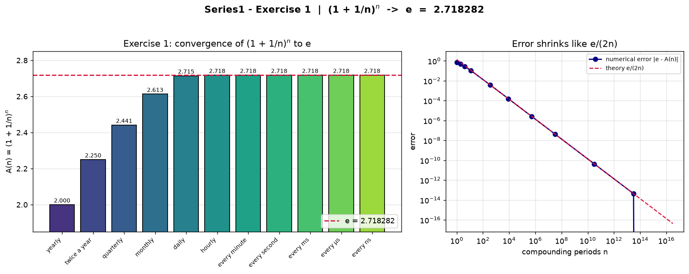
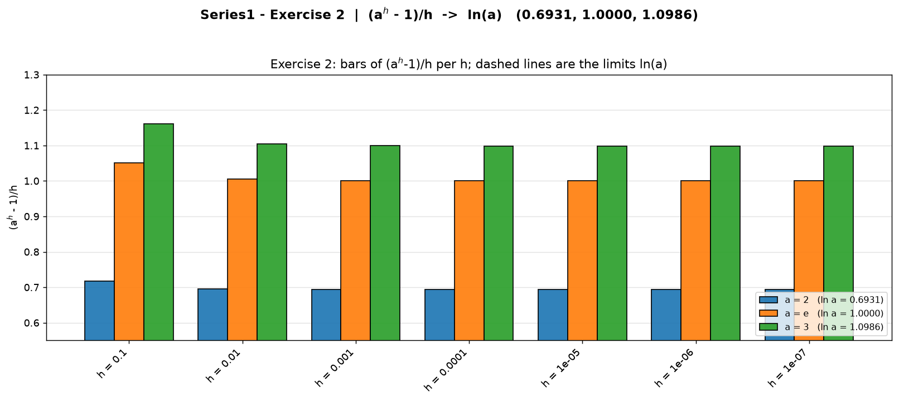
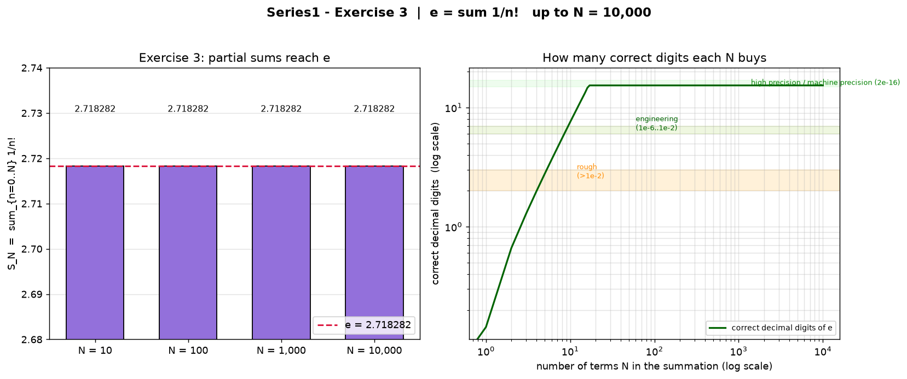

Overview — the big idea
What the sheet asks
- Ex.1 — implement (1+1/n)**n from yearly up to every nanosecond, draw a histogram.
- Ex.2 — reproduce the table of (a**h - 1)/h for a = 2, e, 3 as h shrinks (tolerance x10^-6), draw a histogram.
- Ex.3 — implement e**x = sum x**n/n! with x = 1, summing up to 10,000 terms, draw a histogram.
Why they belong together
e has three equivalent definitions:
e = lim (1+1/n)n = lim (eh-1)/h = Sum 1/n!
Each exercise builds one of them numerically - and all three return the same double-precision number 2.718281828459045. They also teach a deeper lesson: how you compute a limit matters. Naive floating-point recipes destroy the answer exactly where this sheet asks for precision (nanosecond, h to 10^-7, 10,000 series terms).
Exercise 1 - (1 + 1/n)n converges to e
Method
1 unit at 100%/year, credited n times per year, grows after one year to A(n) = (1+1/n)n. We march n from 1 up to the number of nanoseconds in one year (3.1536e16).
for n in [1,2,4,12,365,8760,525600,
31_536_000, 3.1536e10, 3.1536e13, 3.1536e16]:
A = math.exp(n * math.log1p(1.0/n)) # stable
Results - A(n) for every period
| How often | n | A(n) | |e - A(n)| |
|---|---|---|---|
| yearly | 1 | 2.000000 | 7.18e-01 |
| twice a year | 2 | 2.250000 | 4.68e-01 |
| quarterly | 4 | 2.441406 | 2.77e-01 |
| monthly | 12 | 2.613035 | 1.05e-01 |
| daily | 365 | 2.714567 | 3.71e-03 |
| hourly | 8 760 | 2.718127 | 1.55e-04 |
| every minute | 525 600 | 2.718279 | 2.59e-06 |
| every second | 31 536 000 | 2.718282 | 4.31e-08 |
| every ms | 3.1536e10 | 2.718282 | 4.31e-11 |
| every us | 3.1536e13 | 2.718282 | 4.35e-14 |
| every ns | 3.1536e16 | 2.718282 | 0.00e+00 |
error decays like the theory line e/(2n).

Exercise 2 - (ah - 1)/h settles at ln(a)
Method
q(a,h) = (ah - 1)/h is the slope of the secant of f(x) = ax between x=0 and x=h. As h shrinks to 0 the secant becomes the tangent at 0 and the slope tends to f'(0) = ln(a).
for h in [0.1, 0.01, 0.001, 1e-4, 1e-5, 1e-6, 1e-7]:
for a in [2.0, math.e, 3.0]:
q = (a ** h - 1.0) / h # secant slope
The script stops when |q - ln(a)| < tolerance 1e-6 and reports that this happens at h = 1e-6 for every base.
Results - the laboratory table
| h | a = 2 | a = e | a = 3 |
|---|---|---|---|
| 0.1 | 0.7177 | 1.0517 | 1.1612 |
| 0.01 | 0.6956 | 1.0050 | 1.1047 |
| 0.001 | 0.6934 | 1.0005 | 1.0992 |
| 0.0001 | 0.6932 | 1.00005 | 1.0987 |
| 1e-5 | 0.6931 | 1.00000 | 1.0986 |
| 1e-6 threshold | 0.6931 | 1.00000 | 1.0986 |
| limit ln(a) | 0.6931 | 1.0000 | 1.0986 |
ln 2, ln e = 1, ln 3 - the derivative of a^x at zero.

Exercise 3 - ex = Sum xn/n! , x = 1
Method
The exponential equals its Maclaurin series (radius of convergence is infinite). For x = 1 this is the classic e = Sum 1/n!. Terms are generated recursively, so no giant factorials appear:
term, S = 1.0, 0.0 # term(0) = x^0/0! for n in range(0, 10_000 + 1): # up to 10,000 S += term term *= x / (n + 1) # term(n+1) = term(n)*x/(n+1)
The right-hand panel counts the correct decimal digits of e each N buys and draws the accuracy bands: rough (>1e-2), engineering (1e-6..1e-2), high precision (<1e-6) and the machine-precision ceiling (≈2e-16).
Results - partial sums S_N
| N (terms) | S_N | |e - S_N| | correct digits |
|---|---|---|---|
| 10 | 2.7182818011 | 2.73e-08 | 8 |
| 100 | 2.7182818285 | 4.44e-16 | 16 |
| 1 000 | 2.7182818285 | 4.44e-16 | 16 |
| 10 000 | 2.7182818285 | 4.44e-16 | 16 |
after ~20 terms the terms 1/n! are below 5e-20: the sum saturates at the double-precision value of e.

Key takeaways - the answer to Series1
Mathematical conclusion
| Object | Formula | Limit |
|---|---|---|
| Compound interest | (1 + 1/n)n | e = 2.718282 |
| Derivative of a^x at 0 | (ah-1)/h | ln a (0.6931 / 1 / 1.0986) |
| Exponential series | Sum xn/n! | ex (x=1: e) |
All paths lead to e. The three exercises are three definitions of the same constant, experienced computationally.
Engineering lessons
- Numerical stability: stable rewrites (log1p, exp) survive where the literal formula collapses (nanosecond case turns 1.0 into e).
- Machine precision is a ceiling: 10,000 terms cannot beat the double limit - accuracy saturates at ~16 digits.
- Histograms expose convergence: every exercise is judged with a Matplotlib figure, as the sheet demands.